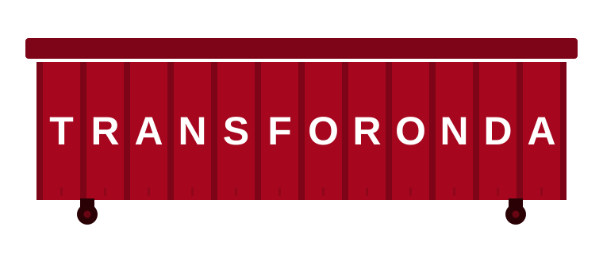
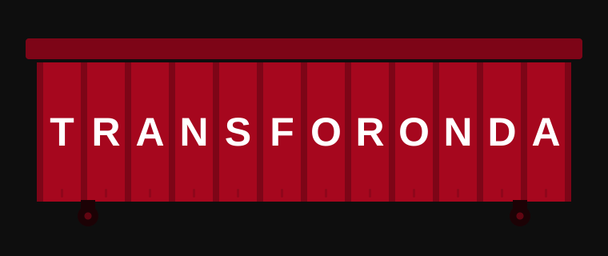
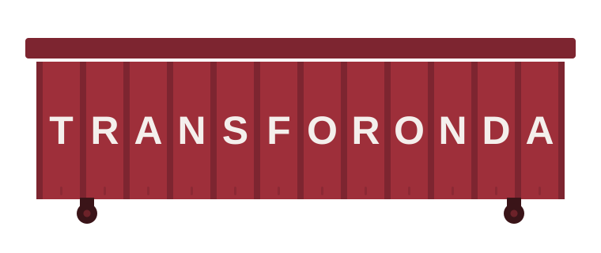
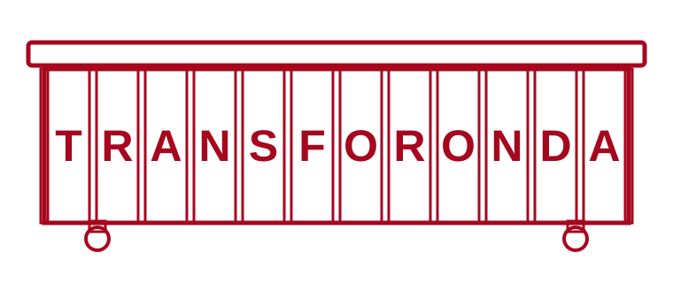
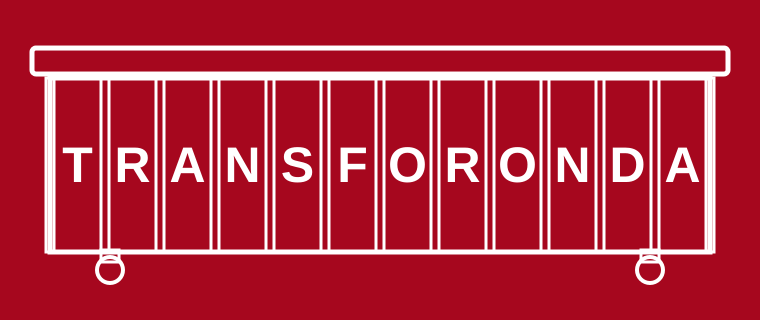
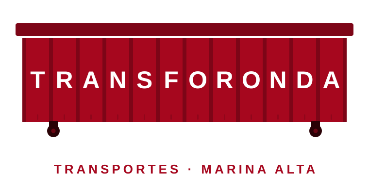
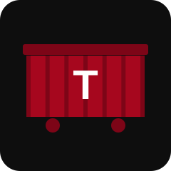
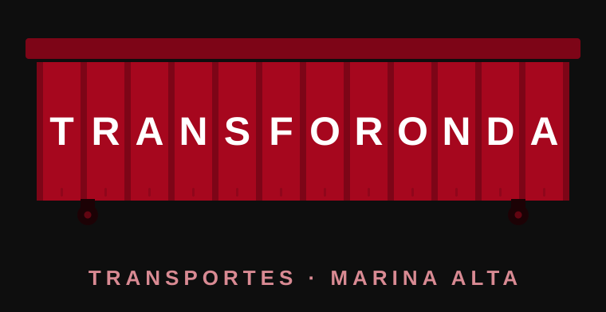

Versión vectorial limpia a partir de tu imagen. Cada letra de TRANSFORONDA queda alojada en una bahía del contenedor, entre las columnas verticales, tal como pediste. Escalable e imprimible en vinilo sin pérdida de calidad.







Oscuro
Lockup oscuro